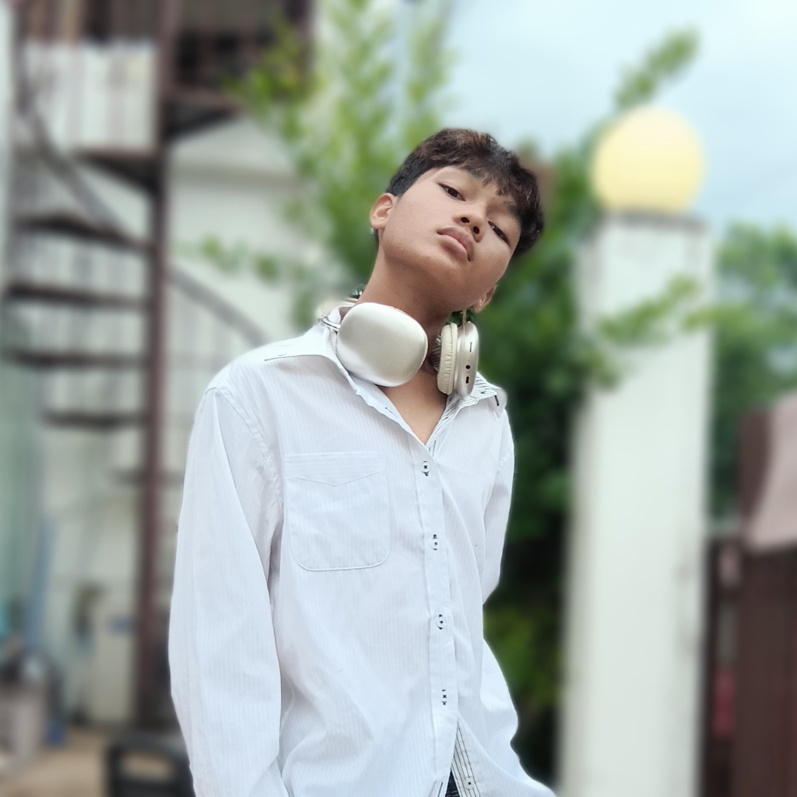

EchoSanctuary was founded with one vision: to give silenced youth a safe place to reclaim their voices. Many young people grow up in homes where they feel invisible, often through neglect, indifference, or constant dismissal of their feelings. Out of this silence, EchoSanctuary was born: a safe space where every story matters and every voice carries power.
Our advocacy began as a small project among students who wanted to change the way youth were treated in their own homes and communities. We believed that no young person should feel alone in a house full of people, and that by speaking up together, healing and hope could begin. Today, EchoSanctuary continues that mission, working to remind youth everywhere that their voices have value and their stories can inspire others.

I’m Jesus V. D. Valencia, the creator of EchoSanctuary. Even though I didn’t grow up in a physically abusive home, I often felt like my voice had no volume. I bottled up my feelings instead of speaking them. EchoSanctuary is my way of creating a space where no youth has to feel silenced the way I once did.
📍 Location: Philippine Science High School – Southern Mindanao Campus, Davao City, Philippines
📧 Email: jesus.valencia@smc.pshs.edu.ph
📞 Hotline: (+63) 993 793 3530
EchoSanctuary | “Even the quietest voice can echo louder than silence.”